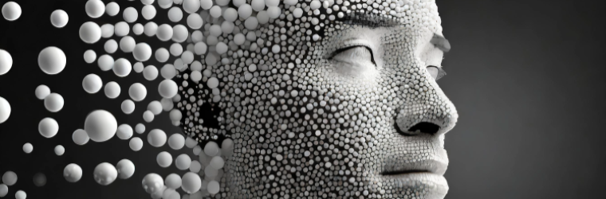

Biometrics
What are biometrics?
Biometric identifiers are measurable and distinctive characteristics which are able to differentiate individuals.
Biometric Authentication is a form of measuring physical or biological characteristics that can be used to identify individuals. Characteristics of people are individualised, and their unique identity can be used to increase the security of the password system. This makes biometrics widely used across many different areas and sectors, from financial services, to law enforcement and in the workforce. Biometric identifiers are measurable and distinctive characteristics which are able to differentiate individuals. There are three types of biometrical measurements:
- Biological
- Morphological
- Behavioural
Biological identifiers use genetic traits or ones that are at a molecular level. This includes characteristics like blood, or DNA which can be assessed through a sample of bodily fluids.
Morphological identifiers involve the shape and structure of the body, with more physical traits such as fingerprints, retinas and facial shapes.
Behavioural identifiers track the behaviour of a person, such as their usual location, mouse movements and typing styles.
Biometrics are used for two main reasons:
- Convenience
- Security
They cannot be ‘forgotten’ as they are always on you and it makes identifying a person quicker and easier.
It is difficult to impersonate someone else without their unique features.
Many companies produce biometric identifiers.
Hardware and Software
Biometrics mainly have similar software required to make it work. The basic software used are Biometric Scanner, Biometric Processer, Biometric Storage and Biometric Matching Procedure.
The biometrics scanners are the software used to identify and to capture the individual traits of a person. Scanners only have one main requirement, to capture the characteristic needed. The user will be asked to provide an image or a sample to be used as an identifier.
The biometric processers process the image or sample that is given by the scanner. They do two main things. First, the processer will do a quality control check to ensure the data is reliable and valid to be used. Users may be prompted to provide another sample if it is not clear enough. Secondly, the processer will extract the characteristics that will be used to be an identifier, such as the iris or a facial map. Then, these are usually turned into binary data, ready to be stored into a database.
The biometric storage is where the binary data is saved. They are stored into a database system which is created for efficient retrieval and processing. They are usually encrypted to protect private information and sensitive data that may be received from unauthorised access. The algorithms that are in place ensures the database can only be accessed by authorised people who have the suitable code or key.
The biometric matching procedure compares the biometric data stored in the database with a new captured sample. This is to determine whether there is a similarity to allow or to restrict access. Like the processer, they extract the relevant information from the new sample to begin comparison. They have an algorithm which has a standardised representation, which will assess the two images. If they are similar enough, access is granted.

Different biometric identifiers have different hardware requirements, depending on the measurement that is being identified.
- Fingerprint Thermal Readers
- Iris Infrared Scanning
- Typing AI and ML Technologies and Algorithms
On contact, it reads the difference of temperature between the fingerprint valleys and ridges.
Infrared light is used to take images as under infrared light, iris melanin is transparent under it, allowing the details of the iris to be revealed.

Your typing speed, the length of time a key is pressed for and keystroke patterns are recorded and analysed using the algorithms
Analysis of Biometrics
Impacts of Biometrics
Biometrics can affect individuals and society. In recent years, personal identification has been changed by biometrics, and has had increased usage rates around the world.
Individuals
Biometrics have enhanced individual lifestyles by being very reliable and convenient to use every day, however can reduce memory capacity.Biometrics are a reliable way to verify a user. Usernames and passwords can easily be stolen, which can lead to other people logging in as another user. However, since biometric identities are unique, it is harder to obtain, meaning that it is safer and more reliable. Also, due to the distinctiveness of different characteristics of humans, there is a high possibility of an accurate authentication.
2 in 3 people who have used biometrics believe they are faster and easier to use than passwords
Biometrics are also very convenient. Remembering usernames and passwords can be a hassle, however biometric characteristics are always with the user, as it is on them. According to VISA, 2 in 3 people who have used biometrics believe they are faster and easier to use than passwords. They carry their credentials wherever they go and the processing time only takes a few seconds at most.
Biometrics, however, may create a dependency on technology. Relying too much on biometric identification can reduce a person’s reliance on their memory for passwords or documents that are a more traditional form of authentication. However, though this is very convenient, it may lead to a decline in memory skills when memorising alphanumeric passwords or PINs.
Societies
Societies have also been impacted by biometrics through enhanced security and accessibility.
Biometrics can give enhanced security as they are a reliable way of verifying individuals’ data to allow authorisation. Many border control use biometrics for facial recognition and fingerprint scanning to verify travellers’ identities. For example, the Sydney Airport has adopted SmartGates at the passport control. They use facial recognition and passport to match a person’s features to check whether they are who they say they are.
Biometrics also streamline processes by increasing accessibility for people who may have a disability. They can provide individuals with convenient ways of identification without need of physical or mental capabilities. They reduce the need of physical documents or tokens that people may misplace or forget. They also don’t require people to memorise answers to questions or passwords.
Legal, Social and Ethical Issues
However, there are many legal, ethical and social issues that come with the use of biometrics.
Social
Lack of security is one of the biggest social problems with biometrics. Biometrics have the capacity to collect large amounts of information about a person, however this causes risks of loss of this data. There may be problems with the database system, which can cause leakage of personal data that may be misused or spread.
Biostar 2’s storage was unprotected and unencrypted ...gain access to 27.8 million records and 23 gigabytes worth of data
In 2019, the biometric identifications of over 1 million people were found on a publicly accessible database for the company Suprema (who is responsible for the database Biostar 2), that was used by the UK’s police, banks and defence contractors. Some Israeli security researchers, were working with a service which reviews virtual private network services and penetrating into security systems of familiar IP addresses to ensure their security. However, they found that Biostar 2’s storage was unprotected and unencrypted, allowing them to gain access to 27.8 million records and 23 gigabytes worth of data, including fingerprints, facial scans, unencrypted usernames and passwords and personal details.
This situation shows that biometrics can be extremely risky if not managed well and can create a lot of exposed data and personal records.
Ethical
An ethical issue with biometrics is privacy. Due to the large amount of information given, there are many issues of privacy, surveillance potentials and concerns about information use. The storage of biometric data may deter some individuals from using them as they may be afraid of other people monitoring them or exploitation of their data. This information has a possibility of being sold by the people, which creates danger for people as their physical, behavioural or biological identities are being revealed. Biometric systems are also able to survey and monitor individuals’ behaviours, movements and locations. This can create ethical concerns regarding the idea of other people monitoring users, as this can create abuse of power or selling of information to strangers. Respondents of a Monash survey showed that 49 per cent, agreed that the use of the technology and biometrics in public places is an invasion of privacy. Around 37% believed that the risks outweighed the benefits. This shows the extent of people believing that biometrics can be a privacy hazard.

Legal
Biometric identity theft was a component in around one of five fraudulent attacks
Identity theft is a legal issue concerning biometrics. This is the deceptive use or manipulation of a person’s biometrical identity and using these to gain unauthorised and illegal access to their data or information. Identity related crimes can incur a maximum penalty of 10 years' imprisonment. Other people may attempt to deceive authentication systems through presenting false biometric samples. Facial recognition systems can be fooled by 3D replicas and fingerprint scanners through fake fingerprints made from silicon. Shufti Pro Fraud Report 2021 showed that biometric identity theft was a component in around one of five fraudulent attacks. This shows that identity theft is a major issue in biometrics, which can affect a person through its legal implications.
Recommendations
Strategies for Acceptable Uses of Biometrics
There are many ways to improve biometrics to demonstrate acceptable use.
Security can be enhanced by adopting more secure databases and systems of biometrics. Companies can create more protected storage through increased encryption during transition and at rest. This is to prevent bad actors to access the data when transferring the data, such as when saving or when authorising access, or when the data is in the storage area. The encryption key should be frequently changed and kept in a key vault. By doing this, the encrypted key is harder to be found and can increase the security. Additionally, a penetration tester can be employed to regularly to check the code and algorithm. This allows the company to identify any security risks that may allow unauthorised access in. These steps are effective as we can see many of the globe's biggest companies, such as Google, Microsoft and LinkedIn, say that encrypting data is one of the best ways of preventing data breach. This shows the effectiveness of using encryption codes and keys in securing biometric data.

People can take steps to increase their privacy of their biometric information. People can do this by only giving their biometric samples to reliable or legal sites. By doing so, individuals can ensure that their data is being kept by a safe company, meaning there is a smaller chance of someone within the company taking it and misusing it. If this is impossible, people can increase their privacy by data minimisation or anonymisation. In this way, the company only has some parts of the user’s information, which allows the user to protect their information easier. Additionally, the people won’t know who the fingerprint belongs to, which can reduce misuse of information and increase privacy, especially if the information is sold or taken.
'MFA can block over 99.9 percent of account compromise attacks'
Companies can also reduce biometric identity theft through using multi-factor authentication. Identification systems can combine biometrics with other factors, like passwords, tokens or one tie codes. Multi factor authentication ensures that bad actors will not be able to enter through just samples alone. Microsoft says, ‘By providing an extra barrier and layer of security that makes it incredibly difficult for attackers to get past, MFA can block over 99.9 percent of account compromise attacks.’. This shows the effectiveness of multi factor authentication on reducing identity thefts.
References
i-Pharm Consulting (2023, October 24). Top Life Science Companies Leading the Way in Biometric Data. i-Pharm. Retrieved March 25, 2024 from https://www.i-pharmconsulting.com/blog/top-life-science-companies-leading-the-way-in-biometric-data/
Kaspersky. (2020). What Is Biometrics Security. Kaspersky. Retrieved March 25, 2024 from https://www.kaspersky.com/resource-center/definitions/biometrics
Laas-Mikko, K., Kalvet, T., Derevski, R., & Tiits, M. (2022). Promises, Social, and Ethical Challenges with Biometrics in Remote Identity Onboarding. Springer Link. Retrieved March 25, 2024 from https://doi.org/10.1007/978-3-030-87664-7_20
N.A (n.d) Biometrics Explained IBIA. Retrieved March 25, 2024 from https://www.ibia.org/download/datasets/4346/IBIA-Biometrics-Explained-final-final-web.pdf
N.A (2019) How companies across the globe are using biometric technology IEVO. Retrieved March 25, 2024 from https://ievoreader.com/how-companies-across-the-globe-are-using-biometric-technology/
N.A (2021, March 30). Facial recognition survey reveals concerns about accuracy and bias Monash University. Retrieved March 25, 2024 from https://lens.monash.edu/@politics-society/2020/06/16/1380622/facial-recognition-survey-reveals-concerns-about-accuracy-and-bias
National Academy of Sciences (2010). Introduction and Fundamental Concepts. National Library of Medicine. Retrieved March 25, 2024 from https://www.ncbi.nlm.nih.gov/books/NBK219892/
Olzak, T. (2022, September 13). Biometrics: Why Are They Needed and Top Practical Applications. Spiceworks.Retrieved March 25, 2024 from https://www.spiceworks.com/it-security/identity-access-management/articles/biometrics-practical-applications/
Optimal. (2023, November 20). Types of biometric authentication: What is biometrics?. Optimal IdM. Retrieved March 25, 2024 from https://optimalidm.com/resources/blog/types-of-biometrics-sensors/
OVIC. (2019, July). Biometrics and Privacy - Issues and Challenges. Office of the Victorian Information Commissioner. Retrieved March 25, 2024 from https://ovic.vic.gov.au/privacy/resources-for-organisations/biometrics-and-privacy-issues-and-challenges/
Pato, J. N., & Millett, L. I. (2010). Cultural, Social, and Legal Considerations.National Library of Medicine. Retrieved March 25, 2024 from https://www.ncbi.nlm.nih.gov/books/NBK219893/
Stowell, T. (2023, March 29). How Biometrics Are Transforming the Customer Experience. Harvard Business Review. Retrieved March 25, 2024 from https://hbr.org/2023/03/how-biometrics-are-transforming-the-customer-experience
Taylor, J. (2019, August 14). Major breach found in biometrics system used by banks, UK police and defence firms.The Guardian Retrieved March 25, 2024 from https://www.theguardian.com/technology/2019/aug/14/major-breach-found-in-biometrics-system-used-by-banks-uk-police-and-defence-firms